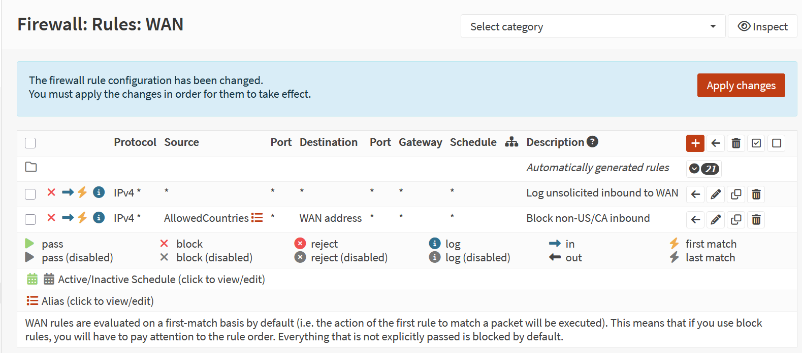
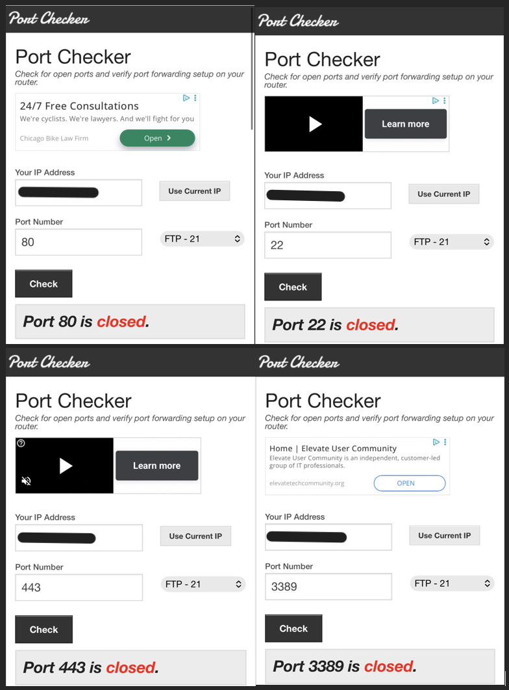
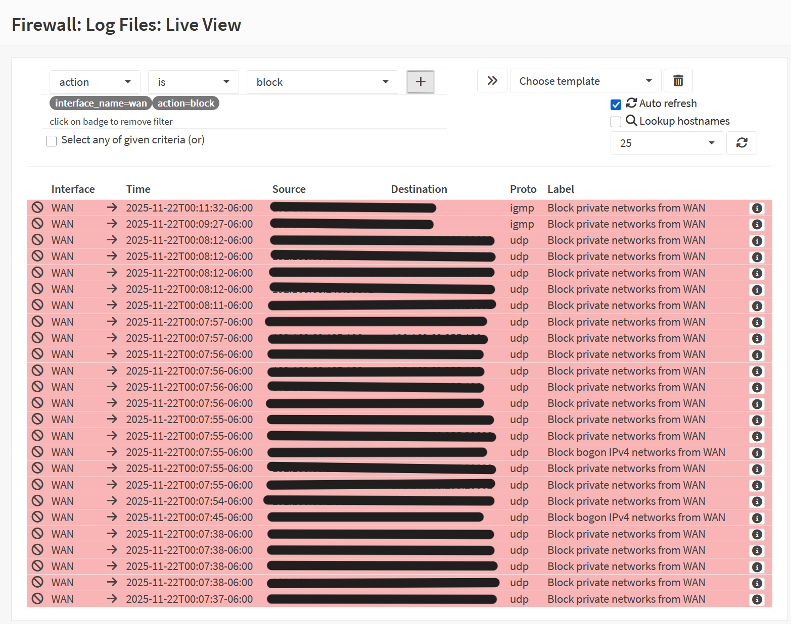
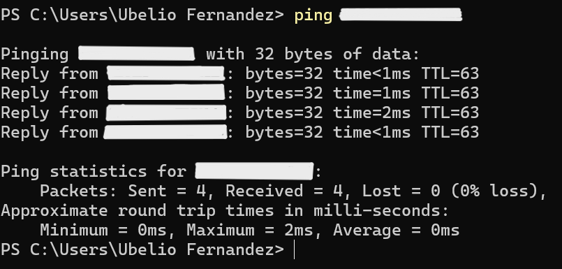

Tools Used
OPNsense Firewall
Firewall Rules (WAN → LAN)
Log Viewer
Diagnostics: Port Scan / External Reachability Tests
Steps Taken
Verified default deny posture on WAN rules.
Added explicit block/log rules for recruiter-facing clarity.
Tested inbound reachability from external host (SSH/HTTP attempts).
Confirmed traffic blocked and logged.
Validated LAN services remained accessible internally.
Screenshot: WAN Rules

WAN rules configured to block/log all inbound traffic.
Screenshot: Inbound Attempt

External attempt to connect was denied.
Screenshot: Blocked Inbound Traffic

Firewall logs confirm inbound traffic blocked.
Screenshot: LAN Access

Internal LAN services remain accessible.
Outcome
Inbound traffic denied by default, with explicit block/log rules documented. External scans confirmed no exposed services. Internal LAN access unaffected. This demonstrates secure baseline posture and SC-401 alignment.